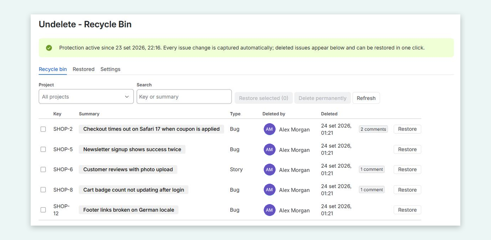

Lost a work item already? Read how to restore a deleted work item in Jira Cloud (what you can still recover without any app).
Getting started
- Install Undelete from the Atlassian Marketplace.
- Protection starts immediately. Undelete scans all existing work items in the background and backs up their attachment files; the status banner shows progress.
- Open Jira Settings (⚙) → Apps → Undelete - Recycle Bin. You need to be a Jira administrator.
Restoring a deleted work item
- Open the Recycle bin tab. Filter by project or search by key or summary.
- Click a work item's summary to preview it: fields, description, comments, worklogs and links.
- Click Restore, or tick several work items and click Restore selected.
- Restored work items appear in the Restored tab with a link to the new work item.
What is restored: attachment files (up to 50 MB each), summary, description, work type, status (when reachable in one transition), labels, priority, assignee, reporter, components, versions, due date, sprint, custom fields available on the create screen, estimates, comments (with the original author and date), worklogs (optional), links, epic/parent and sub-tasks. Restoring a parent automatically restores the sub-tasks that were deleted with it.
What can't be restored
- The original key. Jira assigns a new key; the original key is recorded in an audit comment on the restored work item.
- Attachment files larger than 50 MB, or files the initial scan hadn't backed up yet when the work item was deleted. Their names are listed on the restored work item.
- Inline images at their original place. Backed-up images come back as attachments; the description shows a marker where they were embedded.
- Field values Jira refuses on creation (e.g. archived versions, deactivated users). These are listed in the restore notes.
- Work items deleted before Undelete was installed.
- Watchers, votes, change history and board rank (Jira doesn't allow apps to recreate them).
- Work items hidden from the app by an issue security level are not captured.
- Deleting a whole project is handled by Jira's own project trash (restorable for 60 days in Jira itself).
Good to know: restoring an epic re-links the child work items Jira left without a parent, and restoring a parent brings back the sub-tasks deleted with it. Edits made seconds before a deletion are kept, because the latest summary, status and type are taken from the deletion itself.
Notifications
Restoring a work item creates a new Jira work item and adds its comments, so Jira sends its normal notifications (for example to the reporter, assignee and watchers). Undelete never @mentions people when restoring comments, so restoring doesn't ping everyone who was mentioned originally.
Restoring a deleted comment, worklog or attachment
Jira has no undo for a deleted comment, worklog or attachment either. Undelete keeps them too.
- Open the Comments, worklogs & files tab. Each row shows the work item, the text (or logged time, or file name), the author, who deleted it and when.
- Click the text to read the full comment, then Restore, or tick several rows and click Restore selected.
- The item is added back to the work item. Comments and worklogs get a line naming the original author and date. Comment visibility (role/group restrictions, and internal vs. customer-visible on Jira Service Management) is kept; worklogs keep their original date and time spent.
If the work item itself was deleted since, restore it from the Recycle bin first; the comment then goes to the restored copy.
Project administrators
A Jira administrator can turn on Let project administrators restore their own project's deleted items in Settings. Project administrators then find Undelete - Recycle Bin under Project settings → Apps, showing only that project's deleted work items, comments, worklogs and files. They can preview and restore; permanent deletion and settings stay with Jira administrators.
Who deleted what
The Who deleted what tab counts, per person, the work items, comments, worklogs and files deleted in the last 7, 30 or 90 days (restored items included). On the project page it covers that project only.
Settings
- Projects NOT protected: work items in these projects are not captured.
- Keep deleted items for (days): older records are erased automatically (default 365, range 7-3650).
- Let project administrators restore their own project's deleted items: off by default (see above).
- Back up attachment files: on by default. Files up to 50 MB are copied to Atlassian-hosted storage when they are attached; existing files are copied by the initial scan (or by "Re-scan all work items now" if you turn backup on later).
- Restore worklogs: turn off if logged time should not be re-created.
- Re-scan all work items now: captures any work item that is not protected yet (normally not needed).
Deleting permanently
Tick items and click Delete permanently to erase their stored copies (including file copies) immediately, for example to honour a data-deletion request.
Security and data
Undelete is built on Atlassian Forge and runs on Atlassian: all data, including attachment file copies, stays in Atlassian's cloud, with no external servers. Only Jira administrators, and project administrators for their own projects if a Jira administrator allows it, can view or restore deleted items. See the privacy policy.
Limits
Undelete runs on Atlassian Forge and is subject to Forge platform quotas and Jira rate limits. Very large work items (thousands of comments) keep their most recent comments and worklogs. Changes to links may take a few minutes to be captured.
Support
Email support@occoy.com. Support hours: Monday to Friday, 9:00 to 18:00 Italian time.